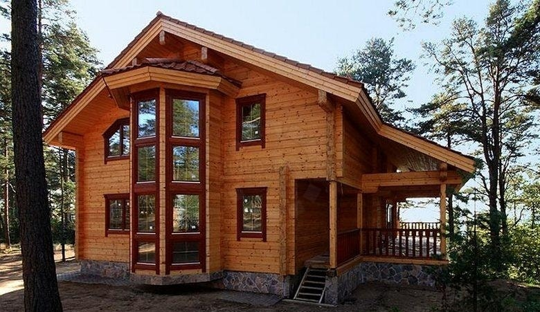
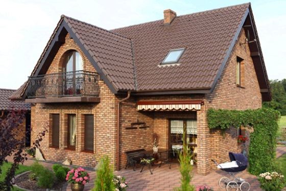
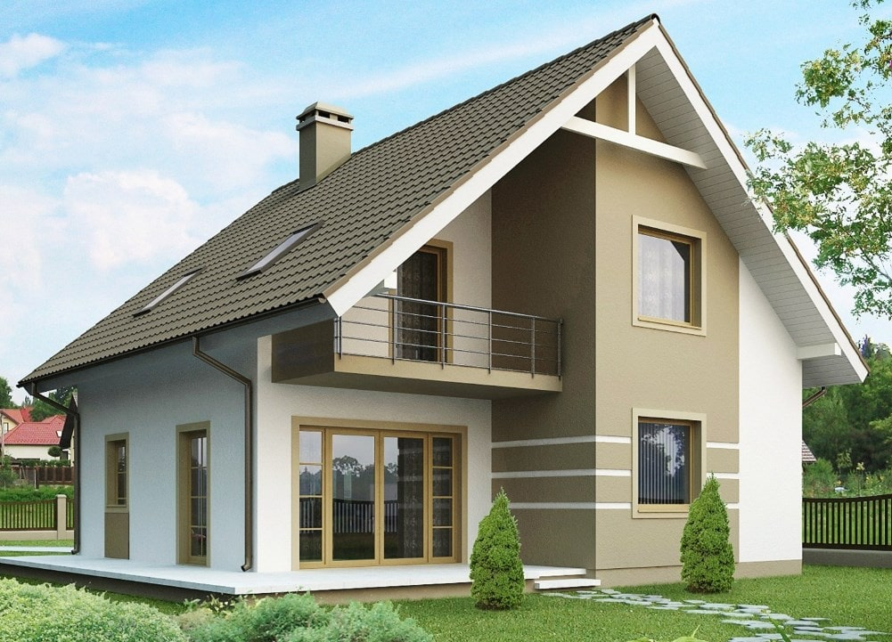
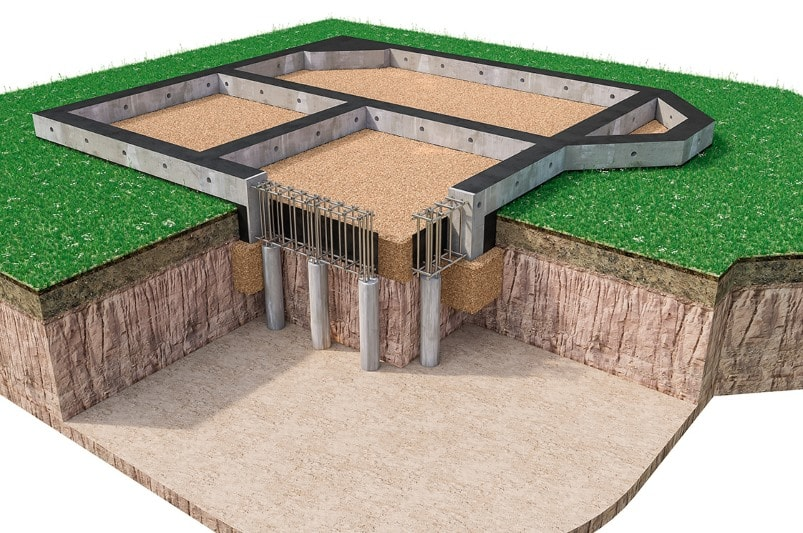
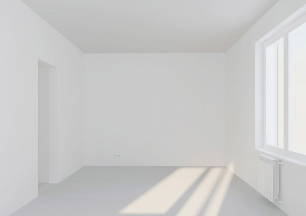
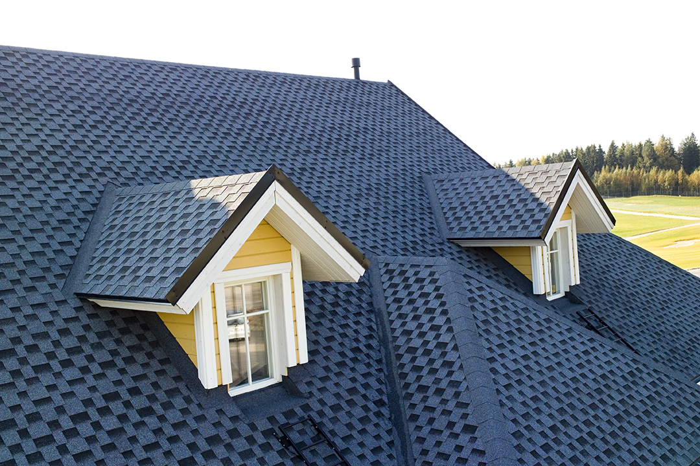
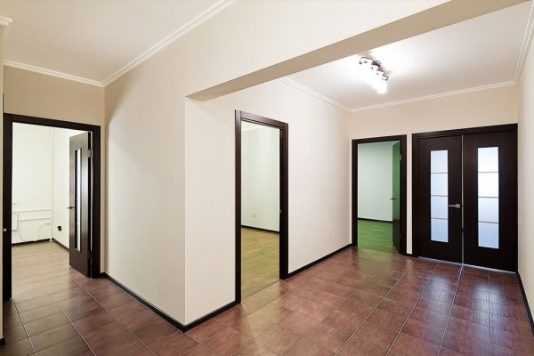

*Имя компании*
*Контакты*
*Имя компании*
*Контакты*
Наша компания, занимающаяся строительством домов вот уже 15 лет может предоставить вам услуги строительства частных домов и коттеджей в Рецичком районе за самое короткое время и по самым приятным ценам. Мы строим дома по вашим проектам, а также у нас имеются свои готовые макеты, которые мы готовы предоставить вам на выборку. Выбрав нашу контору вы построите дом своей мечты!
Мы занимаемся изготовлением:
Дерево - это один из самых лучших материалов для строительства коттеджа. Как и много веков назад, дома из дерева очень популярны и востребованы, за счёт своей долговечности и красоты. Главным преимуществом того, чтобы вы решили использовать дерево для стройки то, что время его возведения в разы больше, чем срок строительства аналогичный сооружений из кирпича или блока, так как работы можно вести даже зимой. Также стоит заметить, что дерево, как сырьё для строительства, это самый экологичный материал для домов, а в наше время очень важно заботиться об экологии. Мы можем гарантировать своим клиентам, что при строительстве будут использоваться только самые отборные деревья из хвойных пород, произрастающих в Минском районе. Минимальный диаметр брёвен, из которых мы строим наши дома - 200 мм, так как это наименьший размер для строительства деревянных домов из бревна для постоянного комфортного проживания, сооружения с меньшим диаметром бревна не пригодны для проживания в холодное время года.

Что первое приходит вам в голову, когда вы слышите про кирпичные дома или, тем более о том, чтобы построить коттедж из кирпича себе? Наверняка вы представляете надёжный, красивый, безопасный и практически вечный дом. В жизни, как и в сказке про трёх поросят, кирпичные строения являются одними из самых прочных и безопасных. Они пожаро- и морозостойкие, имеют ж/б перекрытия, которые обеспечат вам хорошую звукоизоляцию от окружающей среды, очень устойчивы от любых видов вредителей и в конце концов очень престижно и красиво выглядят. Мы же, в свою очередь, можем предложить разные виды кирпича, которые станут отличной частью вашего будущего дома: силикатный кирпич, керамический и клинкерный. Каждый из них обладает своими особыми свойствами, но не уступает другим. Для строительства мы предоставим сырьё самого лучшего качества, которое будет служить вам очень долгие годы.

Наверняка вы слышали, что каркасные дома являются удобными, быстрыми в строительстве и недорогими. И это чистая правда, а подтверждением этому являются люди которые всё чаще строят каркасные дома, как постоянное жильё. Они во многом выигрывают у коттеджей из других материалов из-за своей цены, быстроты постройки и различных вариантов утепления стен. Такой дом строится примерно за 1-2 месяца, что для этого процесса действительно весьма небольшой промежуток времени. Материалы для строительства каркасных домов маленького веса, что позволяет применять лишь физическую силу. А само строительство зданий может идти при абсолютно разной погоде. Некоторые люди уверенны, что дома из каркаса плохи со стороны теплоизоляции, однако вернувшись к истории этих сооружений, можно вспомнить, что первые каркасные дома были построены в странах Скандинавии и севере Германии, где точно знали всё об утеплении своего жилища.

Так же наша компания предоставляет услуги по выполнению отдельных строительных работ:
Это самая главная часть любого сооружения, без хорошего фундамента невозможно построить дом, который сможет прослужить вам долго. И наша контора может предоставить вам услуги закладки фундамента под различные сооружения:дом, коттедж, баню, гараж, забор и многое другое. Мы строим фундаменты различных типов, которые точно подойдут вам. Ленточные монолитный - отлично подойдёт любым малоэтажным зданиям. Свайно-ростверковые - идеальный вариант для слабых грунтов или рельефных участков с большими перепадами высоты. Блочный (ФБС) - отмечается быстрым возведением, универсальностью и недорогой стоимостью. С цокольным этажом - один из самых прочных и удобных. Наша компания с большой радостью проконсультирует и поможет подобрать фундамент для вас. Группа лучших специалистов составит точный и качественный проект, по которому будет возведён фундамент в кротчайшие сроки.

Стены являются несущей конструкцией любого здания, будь то квартира или коттедж. Но они играют не только роль несущей конструкции, а также и перегородки разделяющей комнаты. Мы возведём крепкие и надёжные стены, по представленному вами проекту, из различного материала. Такого как: дерево, камень, кирпич (керамический, силикатный и другие виды), бетонные из мелко- и крупноразмерных блоков (бетон, керамзитобетон, пенобетон, арболит, газобетон, шлакобетон), железобетонные панели, сендвич-панели. Если вдруг вы ещё не определились, какой материал подобрать для стен, наши специалисты незамедлительно придут к вам на помощь. Наша компания может гарантировать вам качество и скорость работы, подтверждённой множеством довольных клиентов. Также можем вас заверить, что наши цены вас приятно удивят.

Возведение кровли - процесс требующий внимания и взвешенного подхода. Но наши специалисты, в кубе с самыми современными материалами, инструментами и отработанными технологиями отлично справляются с задачей монтажа конструкции и укладки кровли в быстрые сроки. Мы поможем вам построить прочную и красивую крышу, которая подойдёт каждому бюджету. Профессионалы из нашей компании справятся со множеством видов кровельных материлов, таких как: листовая кровля (металлочерепица, профнастил, шифер, ондулин, фальцевая кровля), рулонная кровля, мембранная кровля, наборная кровля (керамическая, песчано-цементная, гибкая, композитная черепицы, сланцевая плитка ) и наливная (мастичная кровля). Крыша, сделанная руками наших специалистов прослужит вам долгое время.

Внутренняя отделка является весьма значимой частью в процессе строительства жилья. И не зря, ведь это то, что будет создавать вам ощущение “нахождения дома”. Она должна быть максимально приятной и комфортной для вас и послужить вам долгие годы. Подходить к этому вопросу нужно очень аккуратно, и, местами, скрупулёзно, взвесив все “за” и “против”. Ведь внутренний вид и интерьер жилища, могут увеличить или уменьшить его. И здесь, к вам на помощь спешит команда наших специалистов. Наши работники предложат вам своё виденье интерьера, или же сделают всё точно по представленного вами проекту. Наша компания занимается внутренней отделкой как квартир, так и частных домов. Пол, стены, потолки, всё будет сделано так, чтобы вам каждый день хотелось возвращаться к себе домой и любоваться интерьером снова и снова.

Внешняя отделка также является очень важной частью строительстве здания, ведь, зачастую все делают выводы по внешнему виду, и ваш дом не исключение. Дизайн наружной отделки дома должен сочетаться со всем участком, и самим его хозяином. Тогда, люди приходящие к вам в гости, или даже просто проходящие мимо, будут понимать, что здесь проживает очень статный человек. Нужно грамотно подобрать сочетание цветов, стилей, каких-либо дополнений к постройке. И если в друг вы ещё не определились с внешней отделкой, её дизайном, на помощь к вам придёт наша команда самых квалифицированных сотрудников. Они учтут все ваши пожелания и предоставят несколько возможных макетов наружной отделки вашего дома. После согласования какого-либо дизайна, наши сотрудники незамедлительно приступят к работе и самые краткие сроки предоставят вам готовый объект, который завершит постройку вашего жилища и будет радовать вас очень долгое время.